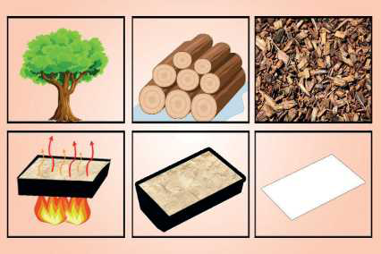

TEMATIKA 1: MATERIALET DHE PËRPUNIMI I TYRE1. Vallja e materialeve
Lexo dhe mëso
Objektet që na rrethojnë përbëhen nga materiale të ndryshme. Këto materiale janë: metali, druri, plastika, leshi, pambuku, qelqi, porcelani, guri, ari etj. Materialet që përpunohen njihen si lëndë e parë. Prej lëndës së parë bëhen sende dhe objekte të ndryshme. P.sh., nga druri bëhet letra, kartoni etj.
Druve që merren për të prodhuar letër iu hiqet lëvorja dhe copëtohen në copa të vogla. Këto copa grimcohen në makina të veçanta. Kur këto copa bëhen gati si miell, mbi të hidhet ujë dhe bëhet si brumë. Brumit i hidhen lëndë të veçanta për t’u zbardhur. Më pas brumi shtypet e rrafshohet dhe lihet të thahet. Kështu prodhohet letra prej lëndës së parë, që është druri.
